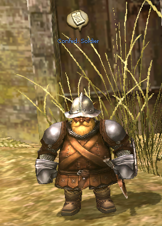
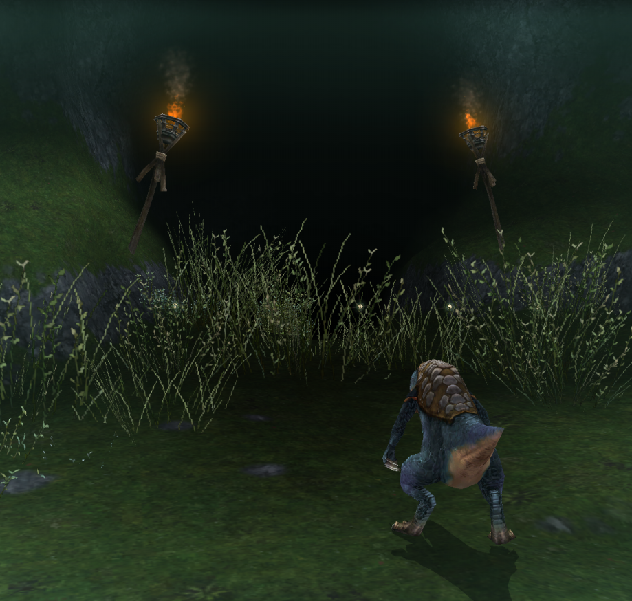
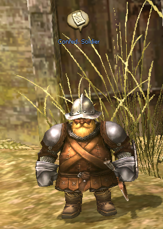
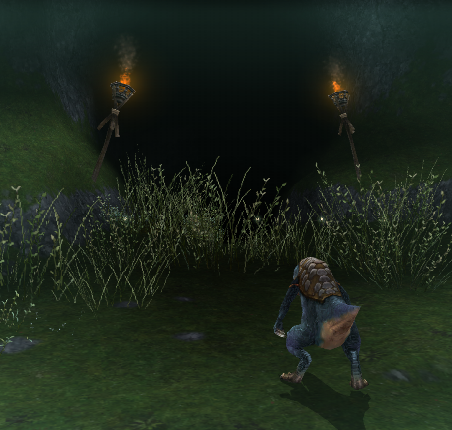

Neumann in Central Plaza
NEED |
ITEM |
QT. |
|---|---|---|
Light Crystal Fragment |
3 |
Order:
- Return to your nation's capital
- Catch a trigger spot near the entrance to get a letter
- Click on the pop-ups to read the letter
- Talk to Neumann, Central Plaza
- Take 3 Light Crytal Fragments if you can, you'll need them
- Exit Astir
- Go to Northern Soplar Highway
- Talk to Confederation Soldier (L-7)
- Go to the Foothills of Mt. Jorito
- Visit G-6 to trigger a cutscene
- Get 3 Light Crystal Fragments from Kobolds
- Bring them to G-6
- Get close to the cave entrance to trigger the cutscene
Light Crystal Fragments drop in Mt. Jorito from:
- Kobolds Lv24
- Kobold Raiders Lv32
- Kobold Soliders Lv38
Reward:
- Access to El Behd